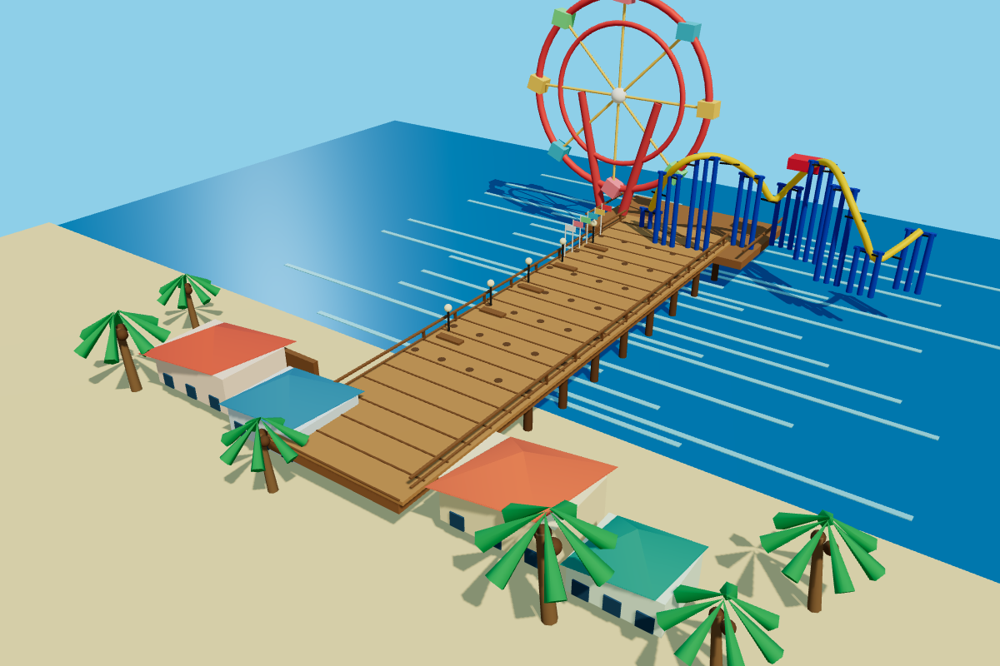
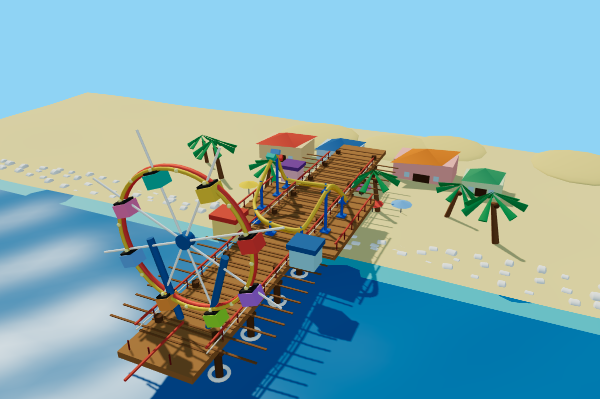
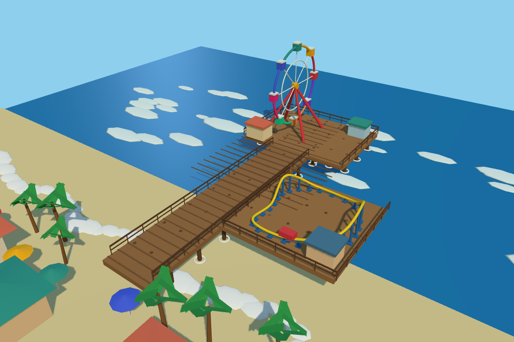
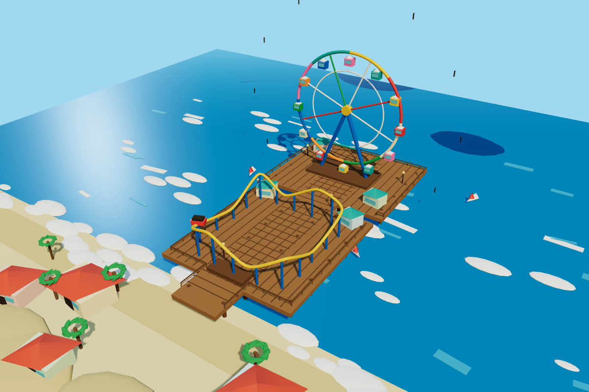
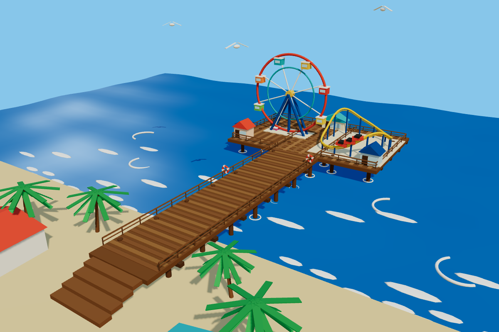
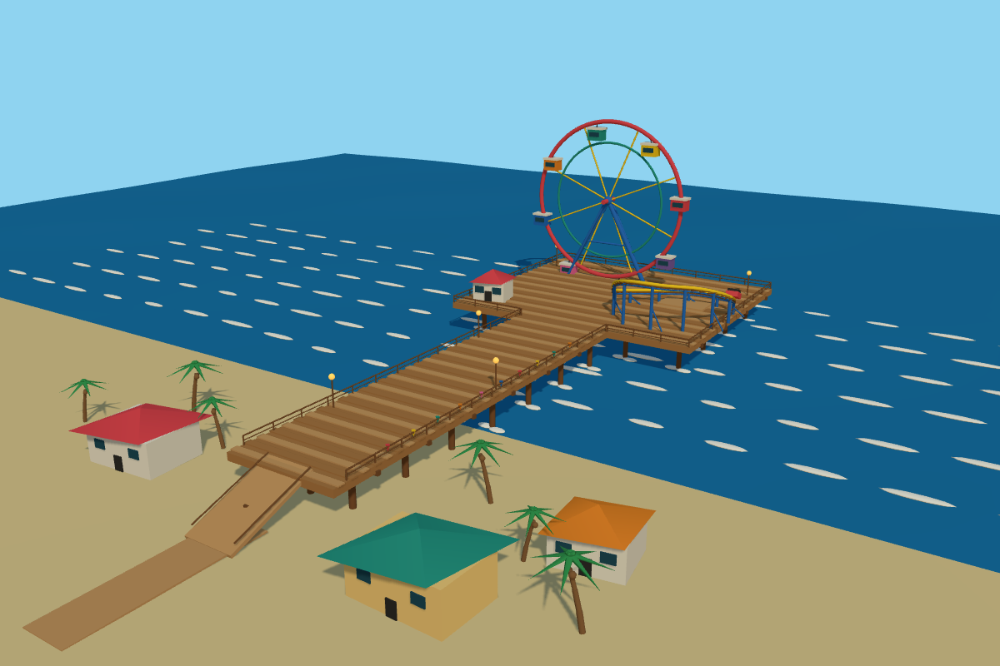

MINIMAL6.5/10 · 11.89s
Bright pier and rides are readable, but the Ferris wheel top is cropped.
Santa Monica · Muse Ember · one original output per effort level

Bright pier and rides are readable, but the Ferris wheel top is cropped.

Complete amusement pier, but wheel supports and projecting spokes are awkward.

Complete pier and rides with good separation; the scene is schematic and the wheel is small.

Readable wheel, roller coaster and timber deck. A few floating dark marks distract.

Best complete pier composition, coherent rides, shoreline and water detail.

Full pier and wheel with clear approach; lighting is flat and the coaster is sparse.